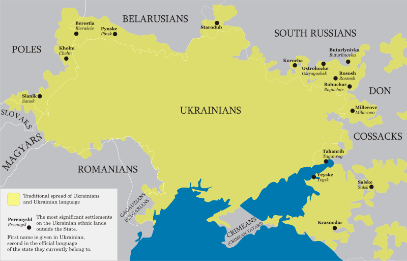
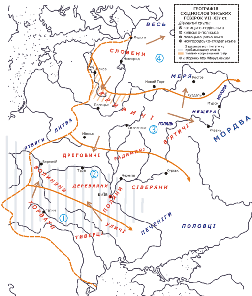
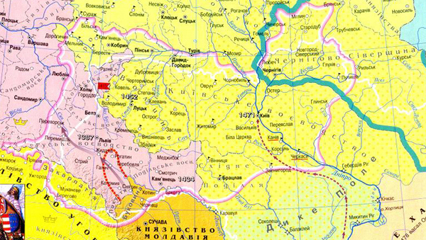
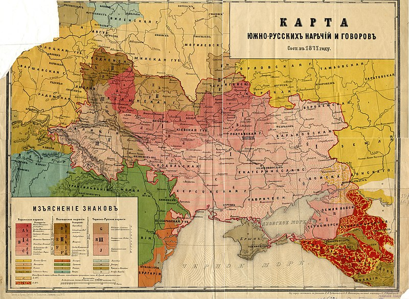
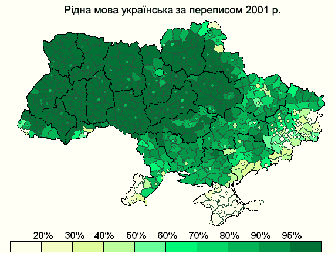

Поширеність української мови
Українська мова — єдина державна мова в Україні та одна з трьох офіційних мов у самопроголошеному Придністров'ї. Українською мовою говорять в Україні, прикордонних територіях сусідніх країн, де здавна мешкають українці, а також у країнах, куди свого часу виїхала значна кількість українців (українська діаспора).
Географічно територія поширення української мови розташована між ареалом поширення російської мови на північному сході (пізніше також і на сході), білоруської на півночі, польської та словацької на заході, болгарської на південному заході. З-поміж неслов'янських мов українська приблизно від 895 року межує на заході з угорською, що належить до фіно-угорської групи; на південному заході з румунською та її молдавськими говірками (романська група), які принаймні від XIII століття розірвали безпосередній контакт між українською та болгарською мовами; до 1945 року та від початку 90-х років XX століття також з кримськотатарською мовою, що належить до тюркської сім'ї.

Раніше контакти української мови з тюркськими були міцніші й різноманітніші: печеніги (Х-XI століття), половці (XI-XIII століття) і татари (від XIII століття) межували з нею на сході та південному сході, а іноді проникали й углиб української території, призводячи до мовної котериторіальності; турки межували з українськими землями на півдні (особливо в XVII-XVIII століттях).
Чисельність носіїв
Українська мова є рідною мовою українців, які проживають на території України (за переписом 2001 року рідною її вважали 32,6 млн осіб — 67,5 % населення України та 85,2 % етнічних українців) та поза межами України: у Росії (там нею володіє 1,8 млн осіб), Молдові (без врахування Придністров'я українська є рідною для 181 тис. осіб, мовою щоденного спілкування українська є для 130 тис. осіб), Канаді (володіє 174 тис. осіб), США (129 тис. мовців), Казахстані (говорять українською 128 тис. осіб, однак володіють більшою чи меншою мірою до 732 тис. осіб), Білорусі (рідною називає 116 тис. осіб), Румунії (57 тис. мовців), Польщі (23 тис. осіб, що постійно проживає на території Польщі та від 20 до 450 тис. осіб з числа трудових мігрантів), Бразилії (щонайменше 17 тис. носіїв), Словаччині (11 тис. осіб, які назвали свою мову українською та 24 тис. осіб, які назвали своєю мовою «русинську») та інших країнах.
Місце серед інших мов
Українська мова займає за кількістю її носіїв, відповідно до різних джерел, 25-е або 22-е місце у світі. Вона є також третьою або другою за поширеністю серед слов'янських мов. За різними оцінками загалом у світі українською мовою говорить від 41 до 45 млн осіб, вона входить до другого десятка найпоширеніших мов світу. В Україні усе населення розуміє українську мову і близько 31 мільйона осіб може говорити нею. В останні роки цифра тих, хто активно користується українською мовою, поступово зростає.
Інфографіка поширення
Східнослов'янські мови в VI—XIV століттях:

Межі поширення української мови в XV столітті:

Діалектологічна мапа української мови, 1871 рік:

Поширеність української мови на початку XX століття:
Українська як рідна мова за переписом 2001 року:
